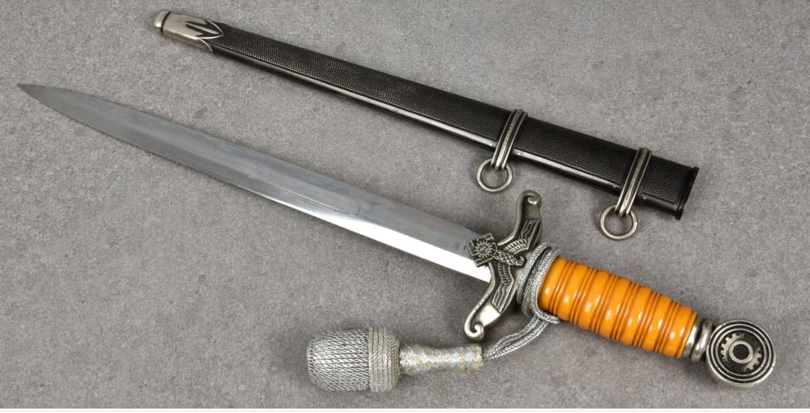
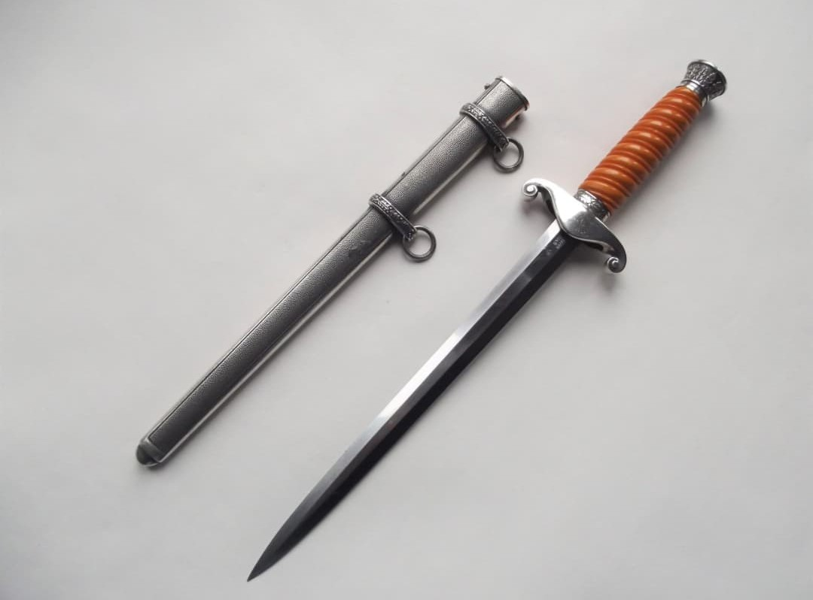
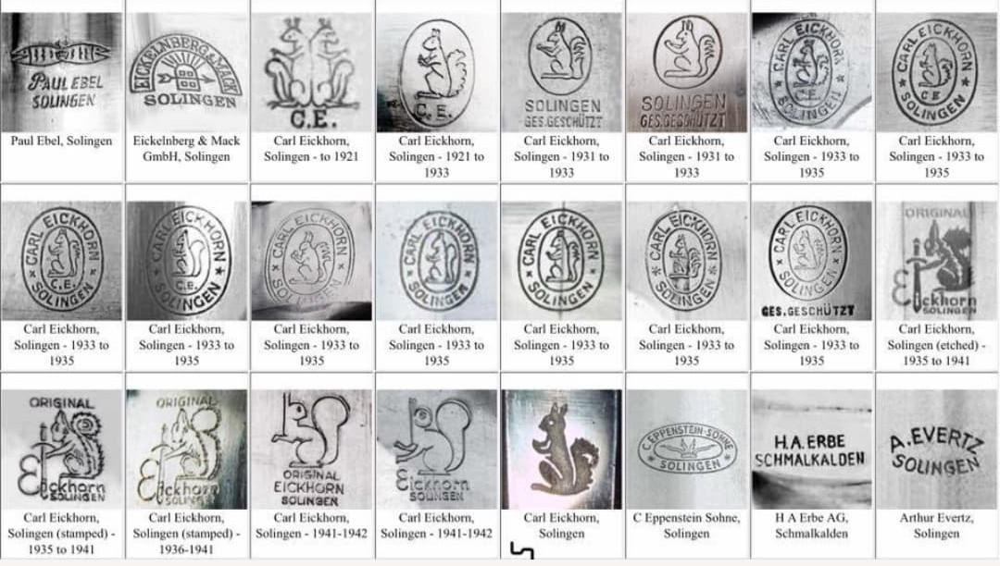
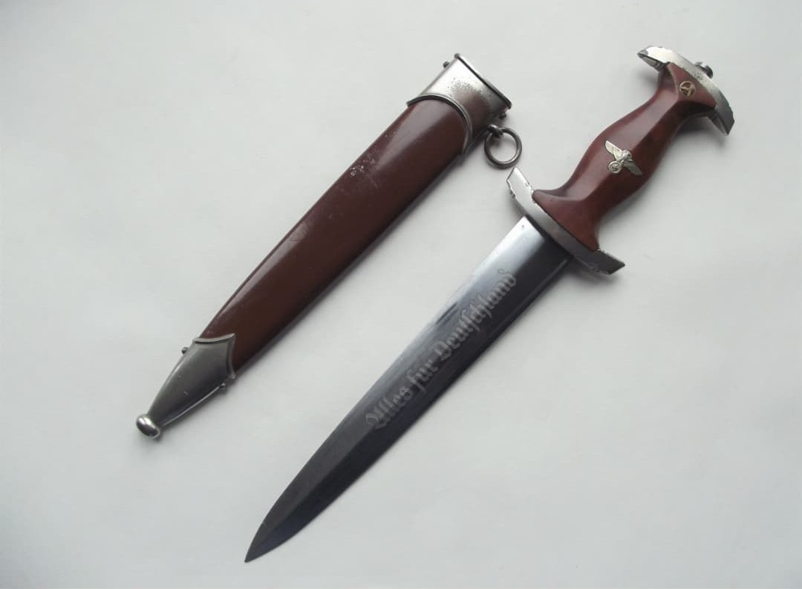
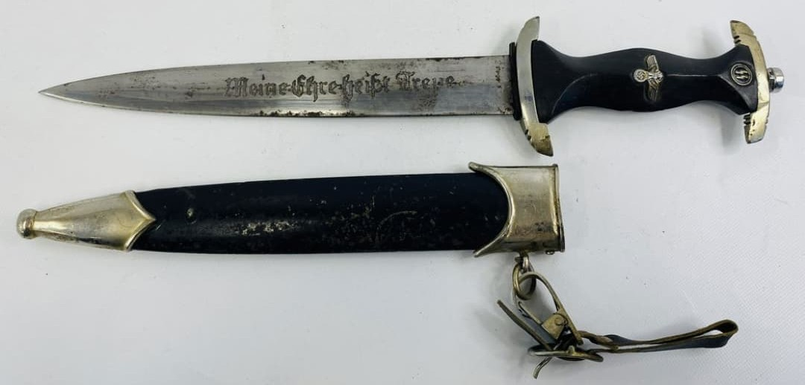

Le poignard allemand de la Seconde Guerre mondiale est une arme blanche offensive, conçue pour le combat rapproché. Contrairement au couteau de combat polyvalent, le poignard est pensé avant tout comme une arme, avec une lame double tranchant.
Le poignard se distingue par sa lame double tranchant, optimisée pour la pénétration. La poignée comporte une garde marquée pour éviter que la main ne glisse.


Les poignards allemands portent souvent des marquages de fabricants, des logos, des devises ou des symboles. Ces inscriptions permettent d’identifier le coutelier, l’organisation et parfois la période de production.

Il existe de nombreuses variantes : modèles militaires, paramilitaires, d’apparat ou commémoratifs.

